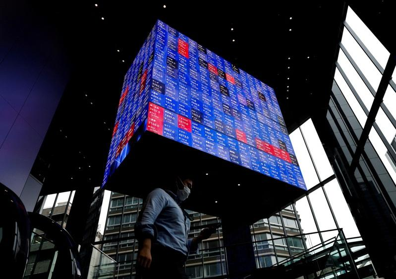
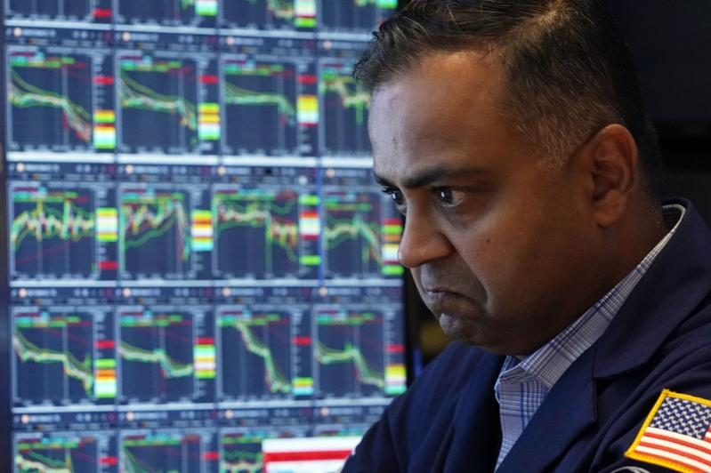
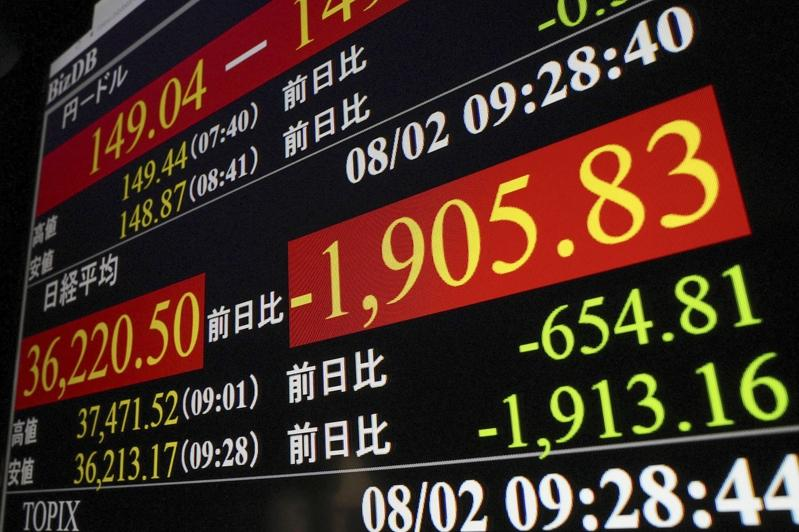

全球股市出现恐慌杀盘，华尔街日报指出，这波全灾股灾起于2日美国公布的就业数据不佳，有五大利空引爆骨牌效应，掀起市场去杠杆化，包括日圆升值导致利差交易平仓、对美元经济恐「硬着陆」的疑虑、辉达等热门股崩盘、股神砍重仓股、中东冲突风险升高等，重现1987年「黑色星期一」的恐慌。
华尔街日报（WSJ）分析，史上1987、1998、2008都有股市崩盘，这次情况不比过去严重，算是1987年的「温和版」。
综合各媒体分析这波全球股灾的五大原因：
利差交易平仓
此次重塑全球资产的变盘时刻，日圆大涨或为最大征兆。首先是美日利差缩小，引发「利差交易」（carry trade）逆转。上周日银（央行）意外升息，市场也几乎认定联准会（Fed）9月会降息，市场上最受欢迎的「卖日圆、买美元」利差交易魅力不再，投资人开始将手中的美元资产换回日圆。
对美衰退疑虑
从上周初领失业金人数、ISM制造业指数到失业率，一连串数据指向美国经济持续疲软，加上星巴克、P&G等消费品巨头的财报不如预期，代表这根支撑美国经济的最大支柱疲软无力，加深了经济「硬着陆」的疑虑，引发市场担心美国经济从「金发女孩」转向衰退。

大热门股崩盘
受人工智能（AI）热潮的驱动，之前全球资金前仆后继涌入辉达（NVIDIA）等美国科技股，也造就「科技七雄」横空出世。但在「衰退交易」下，投资人开始进入避险模式，大举撤出这些大型科技股，引发资金轮动。
股神砍重仓股
在美股大回档之际，巴菲特掌管的波克夏公司，2日公布财报时揭露苹果持股已比第一季锐减近半；7月以来累计也减持约9000万股美国银行。波克夏的现金可能已接近2000亿美元的历来最高，投资人视此为释放悲观信号，全球市场为之震撼。

中东情势恶化
哈玛斯领袖哈尼雅7月31日在德黑兰遭暗杀，区域紧张情势随即恶化，预计伊朗近日可能会进行报复。伊朗外交部发言人5日在记者会上表示，伊朗并不希望区域紧张局势升级，但惩罚侵略者并对以色列及其冒险主义造成威慑，可强化区域的稳定与安全。市场对此更添焦虑。